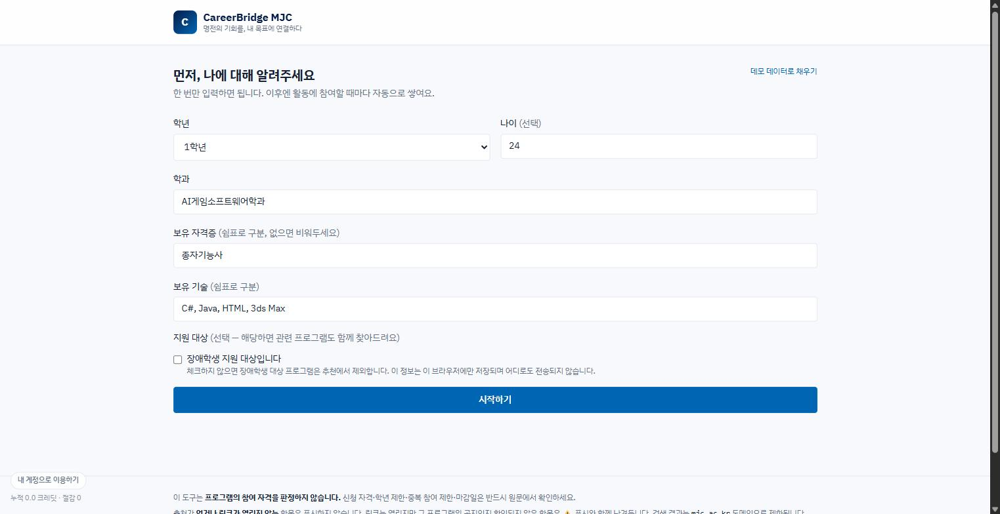
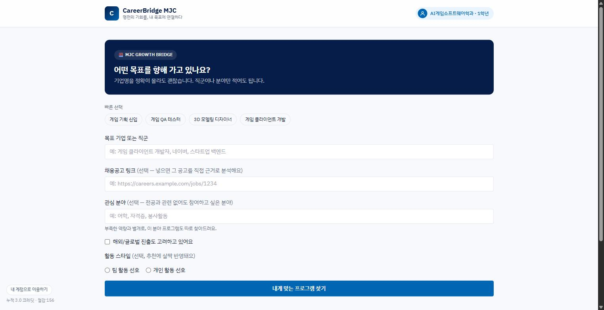
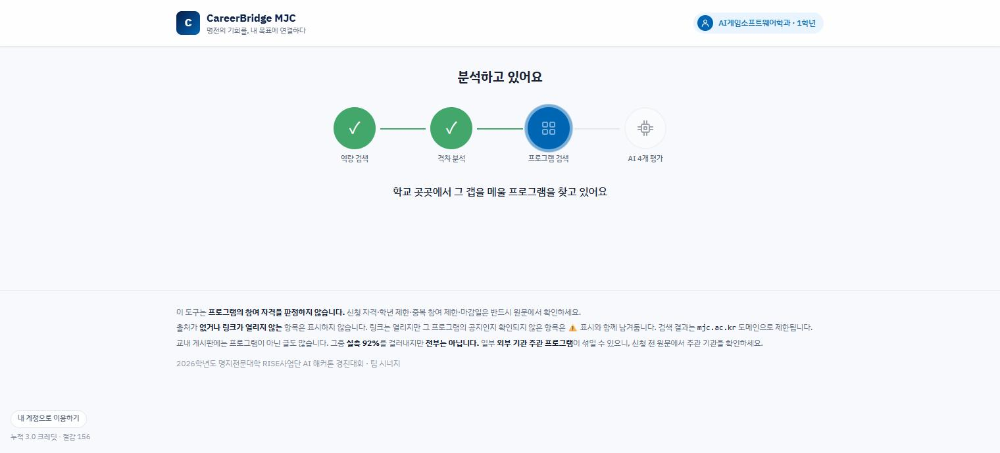
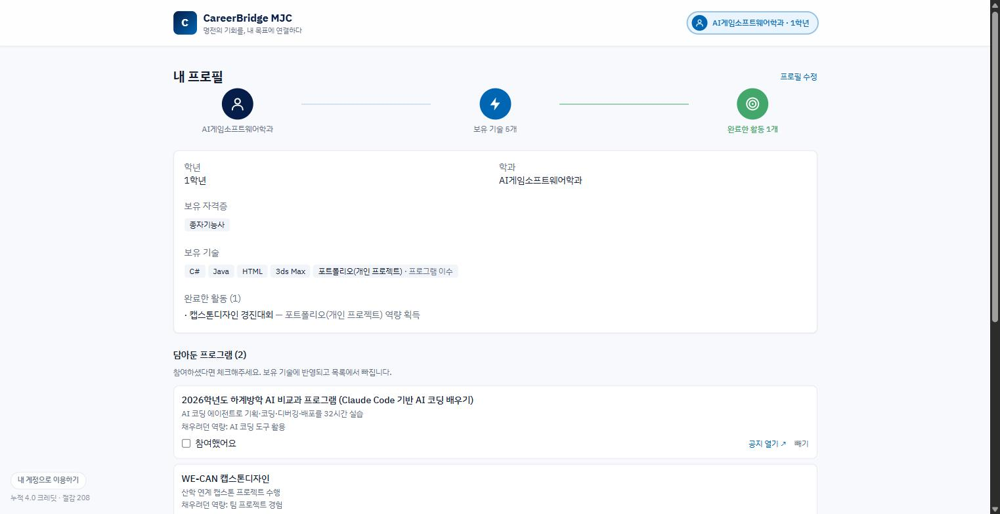
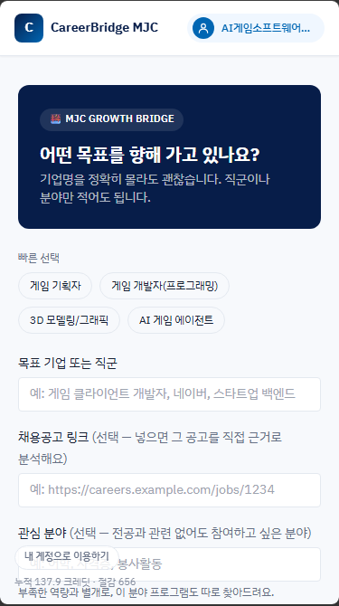
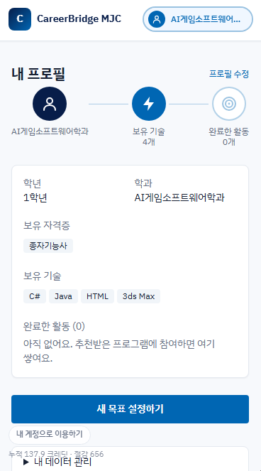
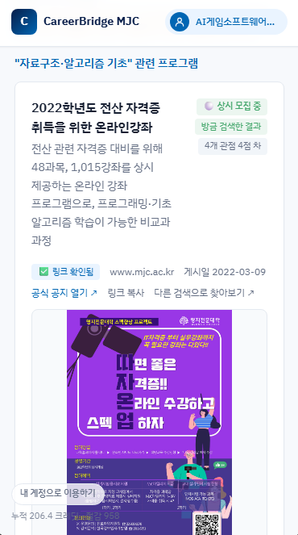
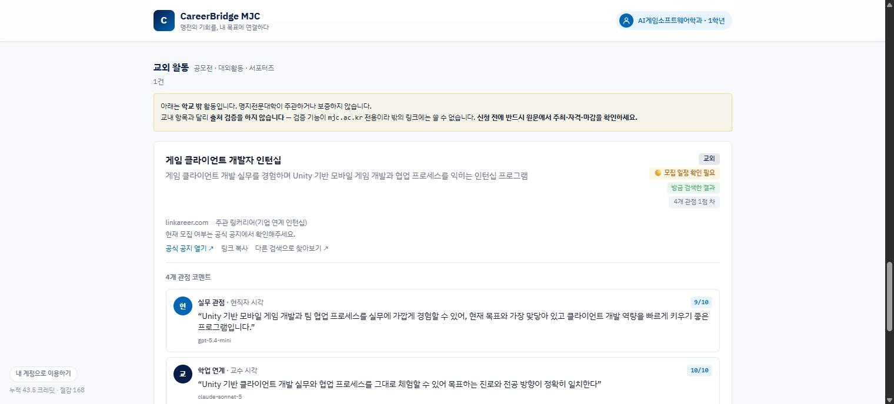

심사용 데모 모드 — 설치·로그인 없이 바로 동작합니다.
단, 지금 키 없이 되는 것은 팀원 개인 키를 심사 기간에만 열어둔 것입니다. 재학생이 실제로 쓰려면 본인 팩트챗 키를 발급받아야 합니다(9.4).
재학생은 본인 팩트챗 키로 사용합니다. 1인당 월 10,000 크레딧이 이미 배정되어 있어 학교 추가 비용은 없습니다. (9.4절)
CareerBridge MJC는 목표 기업과 직무를 정했지만 무엇을 준비해야 할지 모르는 명지전문대학 학생을 위해, 목표 기업의 요구 역량과 학생의 현재 역량을 비교하고 부족한 역량(Gap)을 보완할 수 있는 교내 프로그램을 추천하는 AI 기반 서비스이다.
교내에는 자격증 과정, 생성형 AI 교육, 전산 실습 특강, 현장실습 등 취업과 연결되는 프로그램이 존재하지만, 정보가 대학 홈페이지·부서·학과 등 여러 사이트에 분산되어 있다. 본 서비스는 단순한 프로그램 나열이 아닌, ‘목표 기업의 요구 역량 → 개인의 역량 Gap → 공식 출처 기반 교내 프로그램’이라는 역방향 설계로 탐색 부담을 낮춘다.
추천 정보는 mjc.ac.kr 기반의 공식 출처 URL을 우선 제시하며, 4개 AI 모델의 병렬 평가 결과와 의견 차이를
함께 보여 주어 AI 추천의 근거와 신뢰성을 높인다. 프로그램 이행 이력은 프로필에 반영되어 다음 추천의 입력값으로 활용된다.
실측 수치는 2026-08-06 ~ 08-07 실제 실행 로그와 크레딧 잔량 API로 측정했다. 가정 계산이 섞인 곳은 산식을 함께 적었다.
| 10번 돌리면 몇 번 되는가 | 8.5.4 성공률 실측 (1차 6/10 → 원인 특정 → 2차 9/10) |
| 어느 AI를 왜 거기에 썼는가 | 7.4 모델 6종을 같은 작업으로 재고 골랐다 (82% 절감) |
| 걸러내지 못하는 것은 무엇인가 | 8.6.4~8.6.5 차단율 92%, 남은 7.6%와 그 이유 |
| 사람이 늘면 비용은 어떻게 되는가 | 9.4 학생마다 크레딧이 이미 배정돼 있다 |
CareerBridge MJC — 목표 기업 기반 교내 프로그램 추천 AI
명지전문대학 학생을 위한 비교과·진로 프로그램은 존재하지만, 개별 공지와 사이트에 분산되어 있어 학생이 자신의 목표와 연결하여 발견하기 어렵다. 특히 취업 준비 단계의 학생은 목표 기업과 직무가 요구하는 역량, 자신의 현 수준, 이를 보완할 교내 기회를 별도로 탐색·비교해야 한다.
학생의 목표 기업·직군 및 보유 역량을 입력받아 요구 역량을 검색하고, 개인별 역량 Gap을 분석한 뒤, 이를 보완할 수 있는 교내 프로그램을 공식 출처와 함께 추천한다.
본 서비스는 학교가 재학생에게 제공하는 팩트챗 게이트웨이(factchat-cloud.mindlogic.ai)를 AI 기반으로 사용한다.
외부 상용 API가 아닌 교내 자원을 선택한 이유는 세 가지다.
명지전문대학에는 자격증 취득 과정, 생성형 AI 교육, 전산 실습 특강, 현장실습 등 학생의 진로와 역량 향상에 도움이 되는 프로그램이 운영된다. 그러나 관련 정보가 하나의 서비스에 통합되어 있지 않아, 학생은 여러 사이트를 방문하고 게시글·신청 기간·참여 조건을 직접 비교해야 한다.
따라서 문제는 프로그램의 부족이 아니라, 학생에게 필요한 정보가 여러 곳에 흩어져 있어 발견과 비교가 어렵다는 점이다.
문제를 추정하지 않고 실제로 수집했다. 2026-08-06 기준으로 재학생이 참여할 수 있는 프로그램 143건이 10개 서브도메인에 흩어져 있었다. 고유 출처 URL은 전부 HTTP 200 응답과 본문 렌더링을 확인했다.
| 도메인 | 건수 | 주요 내용 |
|---|---|---|
www.mjc.ac.kr | 51 | 비교과·전산 자격증·AI Study+·장학 공지 |
cls.mjc.ac.kr | 25 | 학과 공지판 (전교 공지 미러링) |
mpu.mjc.ac.kr | 16 | SMART CARE 핵심역량 프로그램 |
sanhak.mjc.ac.kr | 15 | WE-GO 현장실습·Co-op·캡스톤디자인 |
rise.mjc.ac.kr | 10 | RISE사업단 마이크로디그리·전문기술 과정 |
inter.mjc.ac.kr | 10 | 국제교류·글로벌 현장학습 |
mrcc.mjc.ac.kr | 7 | 지역협력·리빙랩 |
edu.mjc.ac.kr | 6 | 평생교육원 |
mjcd · mjcs | 3 | 학과 사이트 |
| 합계 | 143 | 10개 서브도메인 |
예를 들어 다음 항목들이 서로 다른 사이트에 존재한다.
clswwwsanhaksanhakinter목표 기업 요구 역량 검색 → 개인 프로필과의 Gap 분석 → 명지전문대학 공식 사이트 기반 프로그램 검색 → 다중 AI 적합성 평가 → 출처 URL 제시 → 이행 이력 반영의 흐름을 구현한다.
학교가 운영하는 학생 역량 이력관리 시스템 SMART CARE(mpu.mjc.ac.kr)에 직접 접속해 기능 범위를 확인했다.
추정으로 비교하지 않기 위해서다. 확인 결과 SMART CARE는 이미 상당한 기능을 갖추고 있다.
| 구분 | SMART CARE | CareerBridge MJC |
|---|---|---|
| 추천 방향 | 나에게 맞는 것 (성향·기질 진단 기반) | 목표가 요구하는 것 (실제 채용공고 기반) |
| 역량 체계 | 학교가 정한 핵심역량(소프트스킬) | 기업이 요구하는 실제 기술 |
| 데이터 범위 | 시스템에 등록된 항목 | 10개 서브도메인에 흩어진 143건 + 실시간 검색 |
| 갱신 방식 | 담당자 수동 등록 | 실시간 웹 검색 + 출처 URL |
| 신뢰 장치 | 서비스 정책에 따름 | 공식 출처 URL + 4개 모델 의견 차이 공개 |
AI가 임의의 일정·자격 요건을 단정하지 않도록, 교내 프로그램은 mjc.ac.kr 출처가 확인되는 정보만
추천 후보로 사용한다. 화면에는 원문 URL을 제공하고, 신청 가능 여부는 사용자가 공식 공지에서 최종 확인하도록 안내한다.
목표 기업 또는 직무를 정했으나, 준비해야 할 역량과 활용할 수 있는 교내 프로그램을 체계적으로 찾기 어려운 명지전문대학 재학생을 핵심 사용자로 설정하였다.
AI게임소프트웨어학과 1학년 학생 A는 게임 클라이언트 개발 직무를 목표로 한다. A는 서비스에 보유 기술(C#·Java 학습 중, HTML·3ds Max 미숙)과 보유 자격증(종자기능사)을 입력한다. 서비스는 해당 직무의 요구 역량을 실제 채용공고에서 검색하고, A에게 부족한 역량을 도출한다. 이때 목표와 무관한 자격증(종자기능사)은 Gap 판단에 반영되지 않는다. 이후 공식 교내 공지에서 관련 특강·현장실습·교육을 찾아 적합도 및 추천 이유와 함께 제시한다. A가 이행한 프로그램은 프로필 이력에 반영되어 다음 분석 시 보유 경험으로 고려된다.
| 기능 | 설명 | 사용자 가치 |
|---|---|---|
| 프로필 입력 | 학과, 학년, 보유 역량, 자격증 입력 | 개인화 기준 확보 |
| 지원 대상 선택 (선택) | 장애학생 지원 대상이면 표시 — 해당 프로그램을 함께 검색 표시하지 않으면 추천에서 제외 · 이 선택은 브라우저에만 저장 | 필요한 학생에게만 닿고, 아닌 학생에게는 노출되지 않는다 |
| 목표 설정 | 목표 기업·직군 입력 (선택) 실제 채용공고 URL 입력 (선택) 관심 분야 — 전공과 무관해도 참여하고 싶은 분야 | 분석 방향 명확화 목표 밖의 관심사도 놓치지 않음 |
| 요구 역량 검색 | 기업·직무 관련 핵심 역량 실시간 탐색 | 준비 기준 확인 |
| Gap 분석 | 보유 역량과 요구 역량 비교 | 우선 보완 과제 도출 |
| 프로그램 추천 | 공식 출처 기반 교내 프로그램 연결 | 즉시 실행 가능한 다음 행동 |
| 교외 활동 (선택) | 학교 밖 공모전·대외활동을 따로 한 묶음 검색 기본 꺼짐 · 교내 결과와 섞지 않음 · 출처 검증은 교내 전용 | 방학처럼 교내 공지가 적을 때도 다음 행동이 남는다 |
| 다중 모델 평가 | 4개 회사 AI의 적합성 의견 + 의견 차이 수치 | 추천 판단 근거 강화 |
| 담아두기 | 관심 있는 프로그램을 담아두고, 나중에 참여 후 체크 | “관심 있다”와 “참여했다”를 구분 — 잊지 않고 이어감 |
| 이행 이력 | 참여 프로그램을 프로필에 반영 | 지속적 성장 관리 |
| 공지 포스터 | 공지 본문의 안내 포스터를 카드에 함께 표시 | 제목만으로 감이 안 오는 프로그램을 한눈에 파악 |
| 내 데이터 관리 | 내보내기·불러오기, 저장 목록 확인, 전부 지우기 | 서버 계정 없이 기기 이동 · 공용 PC에서 흔적 제거 |
프로필이 갱신될수록 같은 목표라도 Gap 분석 결과가 달라진다. 이미 이행한 역량은 더 이상 부족한 것으로 잡히지 않고, 다음 단계의 과제가 우선순위로 올라온다.
화면과 로직의 책임을 분리해 변경 범위를 제한하고 Git 충돌을 줄였다.
| 파일 | 담당 | 책임 |
|---|---|---|
js/types.js | 공동 | 데이터 계약 (Profile · Target · Gap · ProgramMatch) |
js/ui.js | 유초윤 | 화면 렌더링 (파이프라인을 직접 호출하지 않음) |
js/app.js | 유초윤 | 화면 전환 · 상태 · 키 설정 패널 |
js/mock.js | 유초윤 | 크레딧 없이 UI 확인 (?mock=1) |
js/pipeline.js | 신찬영 | 4단계 파이프라인 · 프롬프트 · 도메인 필터 |
js/gateway.js | 신찬영 | 모델 라우팅 · 캐시 · 사용량 집계 · 키 관리 |
js/profile.js | 신찬영 | 프로필 저장 · 성장 루프 |
js/fallback.js | 신찬영 | 직접 수집한 교내 프로그램 143건 |
api/gateway.js | 신찬영 | 데모 모드 프록시 · 사용량 제한 |
| 객체 | 핵심 필드 | 용도 |
|---|---|---|
Profile | department, grade, skills, certificates, completedActivities | 학생 현재 상태 |
Target | companyOrRole, jobPostingUrl, requiredSkills, gapSkills | 분석 목표 |
RequiredSkill | name, reason, sourceUrl | 목표가 요구하는 역량 |
GapSkill | name, reason, priority | 보완이 필요한 역량 |
ProgramMatch | programTitle, sourceUrl, postedAt, gapSkill, origin, personaScores, disagreement | 추천 결과 |
사용자가 자기 키를 입력하는 경우와, 키 없이 데모 모드로 쓰는 경우의 경로를 완전히 분리했다.
api/gateway.js에는 요청 헤더에서 키를 읽는 코드가 아예 없다.
서버는 환경변수 DEMO_API_KEY만 사용한다.
저장소가 Public이므로 이 사실을 코드로 직접 확인할 수 있다.
학과, 학년, 보유 기술, 자격증 및 이행 이력을 입력받는다. 자유 입력된 역량은 비교 가능한 형태로 정리하여 이후 분석의 기준으로 사용한다. 모든 프로필 데이터는 브라우저 localStorage에만 저장되며 서버로 전송되지 않는다.
목표 기업·직군을 입력받는다. 여기에 더해 실제 채용공고 URL을 직접 붙여넣는 선택 입력을 제공한다.
URL이 입력되면 파이프라인은 일반 검색 대신 그 공고를 최우선 근거로 사용하고 sourceUrl로 인용한다.
“AI가 임의로 만든 요구 역량이 아니냐”는 의문에 대한 가장 직접적인 답이다.
검색 내장 모델(sonar-pro)로 공개된 채용공고를 탐색해 요구 역량을 추출한다.
결과는 단정적 채용 요건이 아니라 ‘분석에 활용한 요구 역량’으로 제시하며, 각 항목에 근거 URL을 붙인다.
출처를 확보하지 못한 항목도 이름만 있으면 남긴다. 다만 그 항목에는 ‘근거 보기’ 링크를 붙이지 않는다.
처음에는 출처 없는 항목을 코드에서 제외했으나, 시스템 프롬프트가 이미 모델에게 같은 지시를 하고 있어
이중 필터가 되면서 파이프라인이 1단계에서 멈추는 일이 있었다. 그래서 규칙을 바꿨다(8.5.2 참조).
실제 출력 예: “C# 언어 및 Unity 엔진 활용 능력” → jumpit.saramin.co.kr,
“Git 기반 협업 도구 사용 경험” → wanted.co.kr
보유 역량과 요구 역량을 비교하여 부족한 항목을 우선순위와 함께 도출한다. 결과에는 ‘왜 부족으로 판단했는지’를 함께 제시한다.
→ 학년을 감안해 요구 수준을 조정하고, 목표와 무관한 자격증(종자기능사)은 Gap에 반영하지 않는다.
Gap을 검색 질의에 반영하여 mjc.ac.kr 기반 프로그램을 찾는다. 각 카드에는 프로그램명, 연결된 Gap,
추천 이유, 출처 URL, 게시일을 표시한다.
실시간 검색이 메우지 못한 Gap은 직접 수집한 143건에서 보충하며, 화면에 ‘방금 검색한 결과’ / ‘사전 조사 자료’ 배지로 구분해 표시한다. 어디서 온 정보인지 숨기지 않는 것이 신뢰의 조건이라고 판단했다.
사용자 테스트에서 원문 보기 링크가 “요청하신 자료를 찾을 수 없습니다”를 띄우는 경우가 발견되었다.
도메인 필터는 통과했지만 페이지가 존재하지 않는 경우다.
형식이 mjc.ac.kr인 것과 지금 실제로 열리는 것은 다르다.
브라우저에서는 CORS 정책 때문에 외부 페이지를 확인할 수 없다.
그래서 서버리스 함수(api/verify-source.js)가 대신 열어 보고 결과만 돌려준다.
이 함수는 AI를 호출하지 않으므로 크레딧을 소모하지 않는다.
| 판정 | 조건 | 처리 |
|---|---|---|
verified | 2xx 응답 + 도메인 유지 + 페이지에서 제목 확인 | 기본 추천 목록에 표시 |
unverified | 열리지만 제목 확인 실패 / 응답 시간 초과 | “원문 확인 필요”로 표시 |
broken | 404·5xx·접속 불가 / 리다이렉트 후 도메인 이탈 | 추천에서 제외 |
unverified가 되었다.
mjc.ac.kr 게시판 한 페이지가 349KB이고, 정작 게시글 제목은 그 뒤쪽에 있었다. 상한을 1.5MB로 올렸다.사용자 테스트에서 신청·진행 기간이 지난 프로그램이 계속 노출되는 문제가 확인되었다. 직접 수집한 143건에 2024년 자료가 포함되어 있었던 것이 원인 중 하나다.
자격 판정 = "너는 신청할 수 있다" → 학칙을 모르므로 하지 않는다 모집 판정 = "이건 이미 끝난 공고다" → 날짜는 확인 가능하므로 한다
“열려 있다”고 단정하지 않는다. 끝난 것이 명백한 것만 제외한다.
확인되지 않으면 unknown으로 두고 원문 확인으로 안내한다.
끝난 공고를 그대로 보여주는 것이야말로 학생을 헛걸음시키는 일이다.
판정 근거는 신청·행사 종료일, 종료 표현(“결과 발표”·“수상작”·“2025학년도” 등), 지난 학년도 게시물(3월 1일 기준)이다.
단 “2026학년도”는 제외 기준에서 뺐다.
실시간 검색 결과와 수집 143건에 동일하게 적용한다.
기준을 “게시일 1년”이 아니라 학년도로 잡은 이유는 8.5에 적었다.
판정 로직은 scripts/test.mjs의 단위 테스트로 검증한다(npm test).
| 적용 전 | 적용 후 |
|---|---|
| 추천 10건 (실시간 3 + 수집 7) 대표 항목 게시일 2024-05-08 |
추천 7건 (실시간 1 + 수집 6) 대표 항목 게시일 2026-05-28 |
위 두 수치는 서로 다른 실행이다. 8.1의 “추천 10건”은 모집 상태 판정을 적용하기 전의 실행이다.
팀 내부 점검에서 나온 지적은 이랬다 — “결과의 절반이 학과 소개다.” 실제 화면을 확인하니 「AI 엔지니어」 결과 5장 중 2장이 「융복합 모듈전공 트랙」이었고, 그중 하나는 「사회조사분석」이었다. 목표와 아무 관련이 없다.
수집 143건을 전부 훑어보니 29건(20%)이 정규 학사과정·학사제도·학과 조직이었다. 그중 10건이 「융복합 모듈전공 트랙 「…」」 카탈로그다 — 트랙 이름만 다른 항목이 열 개다.
융복합 모듈전공 트랙 「IoT융합프로젝트」·「인공지능응용시스템」·「게임제작」·「앱 개발」 … (10건) 「마이크로코딩」·「크리에이티브콘텐츠」 마이크로전공과정 · AI융합 마이크로디그리 과정 학과별 전공기초과정 · 자유전공학과 전공 브릿지 프로그램 · 「스마트관광」 융복합전공 K-MOOC 학점인정 제도 · 진로탐색학점제 · 복수학위 과정 · 학점은행제 학위과정 컴퓨터공학과 학생회 활동
findFallback)은 낱말이 겹치는지로 고르는 단순 매칭이다.
같은 종류의 항목이 열 개나 있으면 낱말 하나만 스쳐도 우르르 올라온다.
실측: "머신러닝·딥러닝 이론 및 평가 지표" 갭에
1위 「마이크로코딩」 마이크로전공과정 · 2위 「사회조사분석」이 올라왔다 —
“분석”이라는 낱말 하나 때문이다.| 경로 | 처리 |
|---|---|
| 보충 검색 (수집 143건에서 채움) | 아예 제외한다. 낱말이 겹친다는 이유만으로 전공 이수를 권할 수는 없다 |
| 실시간 검색 (모델이 찾아온 것) | 막지 않는다. 모델이 관련성을 판단한 결과이므로, 대신 맨 뒤로 보내고 1건으로 제한한다 |
진짜를 죽이지 않았는지 8개 목표로 재측정했다(8.5.2의 네 번을 되풀이하지 않기 위한 절차다). AI 엔지니어 8 · 게임 개발자 3 · 사회복지사 8 · 유아교육 1 · 어학 8 · 포트폴리오 3 · 치위생 0 · 전기기사 8 = 총 39건, 교육과정 0건. 줄어든 것은 게임 개발자 1건뿐이고 그것이 「학과별 전공기초과정」이다 — 의도한 제외다. (치위생 0건은 이 규칙 때문이 아니라 수집 143건에 치위생 프로그램이 없기 때문이다.)
판별 규칙은 js/fallback.js의 CURRICULUM_RE 한 곳에만 둔다.
같은 규칙을 두 파일에 적으면 반드시 어긋난다 — 이 프로젝트에서 타임아웃 숫자와 테스트 개수로 이미 두 번 겪었다.
단위 테스트 19종이 이 규칙을 고정한다(8.5).
프로그램 후보를 서로 다른 4개 회사의 모델이 각기 다른 관점에서 평가한다.
| 관점 | 판단 기준 | 모델 | 회사 |
|---|---|---|---|
| 실무 관점 | 실제 역량 습득에 도움이 되는가 | gpt-5.4-mini | OpenAI |
| 학업 연계 | 전공과 시너지가 나는가 | claude-sonnet-5 | Anthropic |
| 비용·시간 | 투자 대비 가치가 있는가 | gemini-3.5-flash-lite | |
| 시장 트렌드 | 채용 시장에서 통하는 역량인가 | solar-pro2 | Upstage |
학생이 프로그램을 이행 처리하면 획득 역량이 프로필의 skills와 completedActivities에 반영된다.
이미 보유한 역량이면 수준을 올리고, 없으면 ‘프로그램 이수’로 추가한다.
다음 분석에서는 그 역량이 더 이상 Gap으로 잡히지 않는다.
이 도구의 기본 동작은 “목표가 요구하는 것”에서 역산하는 것이다. 그런데 학생의 실제 관심은 그것만이 아니다. 팀 내부 테스트에서 나온 지적은 이랬다 — “전공과 관련 없어도 어학 프로그램만 따로 참여하고 싶을 수 있다.”
목표 설정 화면에 선택 입력란을 하나 두었다. 여기에 적은 분야는 3단계 교내 프로그램 검색의
같은 질의 안에 별도 프롬프트 블록으로 덧붙는다(js/pipeline.js의 interestBlock).
즉 검색을 한 번 더 하지 않는다 — 가장 비싼 sonar-pro를 추가로 부르지 않으므로
관심 분야를 지원해도 호출 수와 크레딧이 늘지 않는다.
결과는 Gap과 별개의 묶음으로 표시하여 화면 맨 아래에 따로 모으고,
Gap 기반 추천을 밀어내지 않도록 정렬에서 항상 뒤로 보낸다.
이 서비스에는 서버 계정이 없다. 프로필도, 이행 기록도 브라우저의 localStorage에만 있다.
개인정보를 보관하지 않는다는 점에서는 옳은 선택이지만, 대가가 있다 —
브라우저를 바꾸거나 방문 기록을 지우면 쌓아온 기록이 통째로 사라진다.
성장 루프가 이 서비스의 핵심인데, 그 기록이 가장 취약하다는 뜻이다.
그래서 내 프로필 화면에 내 데이터 관리를 두었다.
| 기능 | 동작 |
|---|---|
| 내보내기 (.json) | 프로필과 이행 기록을 파일로 저장한다. 파일명에 학과와 날짜가 들어간다 |
| 불러오기 | 파일을 읽어 복원한다. 남이 준 파일일 수 있으므로 형식을 검사하고, 옛 버전 파일이면 빠진 항목을 기본값으로 채운다 |
| AI 응답 비우기 | 12시간 응답 캐시를 지운다. 최신 공지로 다시 검색하고 싶을 때 쓴다. 프로필은 지워지지 않는다 |
이후 한 걸음 더 갔다. 초기화는 여전히 프로필·API 키·캐시 세 가지만 지우고
크레딧 사용량 기록(mypath.usage)을 남겼고, 완전히 되돌리려면
개발자도구에서 localStorage.clear()를 쳐야 했다.
그래서 「전부 지우고 처음부터」로 바꿔 mypath.로 시작하는 값을 모두 지우게 하고,
확인 창에 무엇이 지워지는지 목록으로 보여준 뒤 묻는다.
되돌릴 수 없는 일에 “정말요?”만 묻는 것은 확인이 아니다 — 특히 그 안에 API 키가 있다.
같은 화면에 지금 이 브라우저에 무엇이 저장돼 있는지(종류·개수·용량, API 키에는 “민감” 표시)를 상시로 띄운다.
처음에는 카드에 「참여했어요」 하나뿐이었다. 그런데 학생이 실제로 하는 행동은 이것이다.
“이거 괜찮네, 나중에 신청해야지”
이 상태를 담아둘 곳이 없으면 둘 중 하나가 된다 — 아직 신청도 하지 않았는데 체크를 눌러 역량이 먼저 쌓이거나, 그냥 잊어버리거나. 그래서 담아두기를 넣어 성장 루프의 빈 칸을 채웠다.
찾기 → 담기 → 참여 → 쌓임
| 설계 판단 | 이유 |
|---|---|
| 담아둔 목록은 결과 화면이 아니라 프로필에 둔다 | 결과 화면은 목표를 바꾸면 사라진다. 나중에 실제로 참여한 뒤 체크해야 하므로 결과 화면에 두면 의미가 없다. 프로필에서 바로 참여 체크·빼기·공지 열기가 된다 |
| 참여하면 담아둔 목록에서 자동으로 뺀다 | 두 곳에 같은 것이 남으면 “내가 이걸 한 건가 안 한 건가”가 된다 |
| 페르소나 점수까지 통째로 저장하지 않는다 | 화면에 필요한 값만 복사한다. localStorage는 약 5MB뿐이다 |
이 기능은 팀 내부 검토에서 나온 제안이다. 단위 테스트 21종을 함께 붙였고,
특히 담기 → 참여 → 목록에서 빠짐이 실제로 이어지는지와,
savedPrograms가 없는 이전 버전 프로필·내보내기 파일에서 터지지 않는지를 확인했다.
나중에 추가한 필드는 늘 이 지점에서 사고가 난다.
교내 공지의 상당수는 본문이 포스터 이미지 한 장이다(수집 143건 중 14%는 본문 글자가 30자 미만이다). 제목만으로는 무슨 프로그램인지 감이 오지 않는 경우가 많다.
추가 요청도 지연도 없다. api/verify-source.js가 출처를 확인하려고
이미 공지 HTML을 받아오고 있으므로, 그 안에서 이미지 주소만 꺼내면 된다.
문제는 “어느 이미지가 포스터인가”였다. 학교 게시판 한 페이지에는 이미지가 24~39개 있는데 그중 대부분이 로고·아이콘·배너·버튼 같은 화면 장식이다. 사람이 올린 본문 이미지는 그중 한두 장뿐이다.
처음에는 차단 목록으로 접근했다 — logo·icon·btn처럼
장식으로 보이는 낱말이 파일명에 있으면 빼고, 남은 것 중 첫 번째를 포스터로 삼는 방식이다.
/ibuilder/comp/layout1/skin/thema01/bbs/images/0102.png게시판 스킨 장식 이미지다. 경로에
/bbs가 들어 있어 첨부 파일로 오인했고,
파일명이 0102.png라 차단 낱말에도 걸리지 않았다.
그대로 내보냈다면 모든 카드에 똑같은 템플릿 이미지가 붙었을 것이다.페이지를 직접 열어 이미지 주소를 전부 뽑아보니 신호가 분명했다.
사람이 본문에 올린 이미지는 mjcms.mjc.ac.kr/crosseditor/binary/images/…처럼
에디터 업로드 경로에 있고, 나머지는 전부 /ibuilder/·/resource/ 같은
템플릿 경로에 있었다.
그래서 차단 목록을 버리고 허용 목록으로 바꿨다 — 업로드 경로에 있는 이미지만 받고, 나머지는 전부 무시한다. 모르는 것을 막는 대신 아는 것만 받는다. 재측정 8건에서 포스터 7건이 모두 정상 로드됐고(275KB~1.1MB) 오탐은 0건이었다.
깨진 이미지는 구조적으로 뜨지 않게 했다. 로드에 실패하면 onerror에서
이미지 요소를 통째로 제거한다 — 깨진 아이콘이 뜨는 것이 아니라 포스터가 없는 카드와 똑같아진다.
없는 편이 깨진 것보다 낫다. 용량이 1MB를 넘는 경우가 있어 loading="lazy"로 미룬다.
CSP의 img-src에는 https://*.mjc.ac.kr만 추가했고,
학교 밖 이미지가 여전히 차단되는 것을 브라우저에서 확인했다.
방학 중에 팀원 둘이 각자 써 보다가 같은 것을 발견했다. 결과가 비어 보인다.
두 가지 문제가 겹쳐 있었고, 원인이 서로 달랐다.
보충 검색(findFallback)은 낱말이 겹치는지로 고른다. 이때 문턱이
min(2, 가능한최대점수)라서, 살아남은 낱말이 흔한 것 하나뿐이면 문턱이 1로 내려간다.
그러면 그 낱말이 어딘가 있기만 하면 전부 통과하고, 전부 같은 1점이라 순위도 갈리지 않는다.
앞에서 8개를 자르면 언제나 같은 8개다.
실측했다. 「AI 활용 능력」과 「AI 모델 이해」의 결과가 8건 전부 동일했다.
둘 다 쓸 수 있는 낱말이 ai 하나로 줄어들기 때문이다
(활용·능력·이해는 불용어, 모델은 수집 자료에 0건).
ai는 143건 중 34건에 들어 있고, 그중 9건은 제목에 AI가 없이 요약에만 스친 것이었다.
| AI 목표에 딸려 나오던 것 | 왜 걸렸나 |
|---|---|
| 잡카페(JOB CAFE) 진로취·창업 상담 | 제목에 AI가 없다. 요약 어딘가에 ai가 한 번 스쳤을 뿐이다 |
| 도전! 학습톡톡 | |
| 커리어 잡고(JOB GO) 가자! |
고친 방법. 문턱 완화 자체는 없앨 수 없다 — 「포트폴리오」처럼 낱말 하나가 곧 질의 전체인 경우까지 막아 버리면 안 된다. 그래서 없애는 대신 어디에 맞았는지를 본다. 낱말 하나로만 걸렸다면 그것이 제목·키워드에 있어야 인정하고, 요약에만 스친 것은 뺀다. 둘 이상 맞았다면 요약이어도 우연으로 보기 어려우니 통과시킨다. 동점일 때는 제목에 맞은 것을 앞으로 보낸다 — 이게 없으면 수집 순서가 곧 순위가 된다.
수집 자료 143건에 유니티 0건, 언리얼 0건, C# 0건, 머신러닝 0건이다. 게임소프트웨어학과 학생이 자기 전공대로 목표를 적으면 메울 것이 없다. 교내 자료를 아무리 잘 뒤져도 없는 것은 나오지 않는다.
그래서 학교 밖 공모전·대외활동을 따로 한 묶음 찾는 기능을 넣었다.
다만 이 도구가 신뢰를 얻은 근거가 “출처를 mjc.ac.kr로 제한한다”였으므로,
그 약속을 깨지 않는 형태여야 했다.
| 지킨 규칙 | 이유 |
|---|---|
| 기본은 꺼짐 — 학생이 직접 켠다 | 켜기 전 화면에 무엇이 달라지는지(검증 안 함·시간·비용) 미리 적었다 |
화면에서 따로 묶는다scope:'external' | 한 목록에 섞으면 교내 결과의 신뢰도까지 같이 떨어진다 |
| 출처 검증을 하지 않는다고 명시 | 검증 기능(verify-source)이 mjc.ac.kr 전용이다.
교내 항목에 붙는 「링크 확인됨」 배지가 여기엔 없는데, 그 이유를 나중에 알게 되면 나머지 고지까지 의심받는다 |
| 실패해도 교내 결과를 막지 않는다 | 덤이지 본체가 아니다. 교외가 죽었다고 교내까지 못 보게 되면 더 나쁘다 |
| “안 켰음 / 켰는데 0건 / 실패”를 각각 다르게 말한다 | 셋을 같은 빈 화면으로 보여주면 학생은 기능이 고장난 줄 안다 |
judge가
searchPrograms 안의 지역 함수였는데 밖에서 불렀다.
이름이 파일 안에 있기는 해서 정적 검사로는 “있음”이라고 나왔다.
모듈 수준 attachAvailability로 빼냈다 — 교내와 교외가 같은 잣대로
판정되어야 나란히 놓인 배지를 비교할 수 있고, 그러려면 정의가 한 곳에만 있어야 한다.site: 제한이 없어 검색 범위가 교내보다 훨씬 넓다.
나란히 출발시키고(실패 격리는 그대로) 요청량을 3~4건 · 1,200토큰으로 줄였다.
화면 문구도 함께 고쳤다. 처음엔 “약 20초가 더 듭니다”라고 적었는데, 나란히 돌리고 나니 사실이 아니다 — 기다리는 시간은 거의 그대로다. 대신 “학교 밖은 찾을 범위가 넓어 가끔 시간 안에 못 끝냅니다”를 적었다. 실제로 그런 일이 있으니 미리 말해 두는 쪽이 맞다.
동작 확인. 「게임 클라이언트 개발자」로 실행한 결과
교내 5건 + 교외 2건이 나왔고, 교외 항목은 linkareer.com 출처에
「교외」 배지가 붙었으며 「링크 확인됨」 배지는 붙지 않았다.
교외 카드의 「다른 검색으로 찾아보기」에 site:mjc.ac.kr이 섞여
항상 빈 결과를 주던 것도 함께 고쳤다.
내용은 Unity·Cocos 기반 클라이언트 개발이었다 —
수집 자료에 0건이던 바로 그 영역이다.
| 교외 활동을 켠 상태 | 전체 소요 | 교외 결과 |
|---|---|---|
| 순차 실행 (고치기 전) | 2분 초과 | 50초 타임아웃 — 0건 |
| 나란히 실행 (고친 뒤) | 38.0초 | 1건 |
교외를 끄고 돌릴 때가 30~53초(중앙값 41초)이므로, 나란히 돌린 뒤로는 켜도 같은 범위 안에 들어온다. 크레딧만 28 더 들고 기다리는 시간은 사실상 그대로다. 다만 학교 밖은 찾을 범위가 넓어 항상 성공하지는 않는다 — 그때는 교외 구역만 비우고 교내 결과를 그대로 보여준다.
| 영역 | 기술 | 선정 이유 |
|---|---|---|
| Frontend | Vanilla JS (ES Modules), Tailwind CSS | 빌드 도구 없이 즉시 실행. 실패 지점이 적고 두 사람 모두 읽을 수 있다 |
| AI / Search | 팩트챗 게이트웨이 (OpenAI 호환) 6개 모델 병용 | 학교가 재학생에게 제공. 작업별로 모델을 골라 쓸 수 있다 |
| Backend | Vercel Serverless Function ( api/gateway.js) | 데모 모드 전용 프록시. 데모 키를 브라우저에 노출하지 않기 위해 필요 |
| 저장 | 브라우저 localStorage | 개인 데이터가 외부에 저장되지 않는다 |
| Deployment | Vercel | 정적 파일 + 서버리스 함수를 함께 배포 |
| Source Control | GitHub Public Repository | 소스 공유와 재현성 확보 |
| 담당 | 주요 역할 |
|---|---|
| 유초윤 — 프론트/UI | 온보딩·목표 설정·분석 진행·추천 리포트·프로필 화면 렌더링, Mock 파이프라인, 사용자 피드백 반영 |
| 신찬영 — 백엔드/AI | 팩트챗 연동, 4단계 파이프라인, 모델 라우팅·비용 측정, 교내 프로그램 143건 수집, 도메인 필터, Vercel 배포·보안 설계 |
| 공동 | 데이터 계약 확정, 통합 테스트, 보고서·발표 준비 |
AI 파이프라인은 1→2→3→4 단계가 순차 의존이라 한 사람이 이어서 구현해야 한다. 그러면 프론트엔드는 백엔드가 끝날 때까지 기다려야 한다. 하루짜리 일정에서는 치명적이다.
?mock=1 ↔ 실제"]
C --> P1
C --> P2
P1 --> I
P2 --> I
style C fill:#e8f0fa,stroke:#1a5fb4
style I fill:#ecf7f1,stroke:#1f7a4d
실제로 두 사람이 서로 다른 파일을 동시에 수정하면서 여러 차례 병합했으나
충돌이 한 번도 발생하지 않았다. 통합 시점에는 ?mock=1 여부만으로
가짜 데이터와 실제 응답을 바꿔 끼울 수 있어, 화면 확인에 크레딧을 쓰지 않아도 됐다.
팩트챗 게이트웨이는 여러 회사의 모델을 제공한다. 어떤 모델을 어디에 쓸지 동일 작업·동일 프롬프트로 직접 측정해 결정했다.
| 모델 | 1회 크레딧 | 응답 시간 | 배치 |
|---|---|---|---|
solar-pro2 | 0.15 | 2.2초 | 시장 트렌드 관점 |
gemini-3.5-flash-lite | 0.33 | 1.8초 | 비용·시간 관점 |
gpt-5.4-nano | 1.00 | 2.0초 | 학과 기반 목표 제안 (0단계) |
gpt-5.4-mini | 1.99 | 2.8초 | Gap 분석 · 실무 관점 |
claude-sonnet-5 | 8.00 | 6.0초 | 학업 연계 관점 |
sonar-pro | 28.00 | 20초 | 실시간 웹 검색 |
claude-opus-5 | 52.94 | 25.9초 | 사용하지 않음 |
gemini-3.5-flash는 답을 쓰기 전에 속으로 1,187 토큰을 생각한다.
이 토큰도 과금되고 max_tokens 한도에도 포함되어, 출력이 문장 중간에서 잘렸다.
즉 4개 관점 중 하나가 통째로 실패하고 있었는데 화면상으로는 드러나지 않았다.
숨은 추론이 없는 flash-lite로 교체하니 4배 빠르고 24배 저렴해졌고, 결과 품질 차이는 없었다.
solar-pro3에 프로그램 10개를 주면 1번 하나만 평가하고 응답을 끝냈다(응답 전체 86자).
구버전인 solar-pro2는 10개 전부를 2회 연속으로 정확히 평가했다.
기준은 버전이 아니라 작업 적합성이었다.
4번째 관점에 쓸 모델 후보 6종을 각 2회씩 측정한 결과다.
| 후보 | 10개 중 응답 | 시간 | 숨은 추론 | 판정 |
|---|---|---|---|---|
solar-pro2 | 10 / 10 | 2.2초 | 0 | 채택 |
google/gemma-4-31B-it | 10 / 10 | 8.7초 | 0 | 느림 |
grok-4-1-fast | 10 / 10 | 10.8초 | 840 | 느림 + 토큰 낭비 |
seed-2-0-lite | 10 / 10 | 14.2초 | 0 | 느림 |
kimi-k2.6 | 불안정 | 59초 | 0 | 탈락 |
LGAI-EXAONE | 형식 실패 | 40~48초 | 0 | 탈락 |
검색 모델(sonar-pro)은 1회 약 28크레딧으로 가장 비싸다. 그래서 호출을 묶었다.
여기에 12시간 유효 응답 캐시를 더해, 동일 입력을 반복 실행할 때는 크레딧을 추가로 쓰지 않는다. 시연에서 같은 시나리오를 반복해도 비용이 늘지 않는다.
검색 결과에 이름이 비슷한 명지대학교(mju.ac.kr) 정보가 섞여 들어온다.
프롬프트에 “명지대학교는 제외하라”고 명시해도 발생했다. 실제 측정 결과다.
| 검색 질의 | mjc.ac.kr 출처 | mju.ac.kr 오염 |
|---|---|---|
| 프로그래밍·개발 프로그램 | 11 | 8 |
| 현장실습·인턴십 | 11 | 5 |
| 자격증 지원 | 11 | 2 |
| AI·데이터 | 16 | 0 |
mjc.ac.kr로 끝나지 않으면 결과에서 제외한다.
문자열 포함 검사는 mjc.ac.kr.evil.com처럼 도메인을 흉내 낸 주소까지 통과시킨다.
그래서 hostname만 잘라 내어 끝이 mjc.ac.kr인지 비교한다. 걸러낸 출처 목록은 화면에서 확인할 수 있다.
실제로 끝까지 실행해 보고 나서야 드러난 문제들이다. 기록을 남기는 이유는, “동작한다”와 “검증했다”가 다르다는 점이 이 프로젝트의 방법론이기 때문이다.
| 결함 | 원인 | 조치 |
|---|---|---|
| 4개 관점 중 1개가 항상 비어 있었음 | 모델의 숨은 추론이 max_tokens를 소진해 출력이 잘림. catch가 오류를 삼켜 겉으로는 정상으로 보였다 | 모델 교체 + 한도 상향 + 실패를 화면에 표시 |
| Gap 5개 중 1개만 프로그램이 나옴 | 실시간 검색이 일부 Gap을 못 채움 | 수집 143건으로 보충, 출처를 배지로 구분 |
| 모델이 JSON 배열을 여러 개로 쪼개 출력 | 파서가 첫 [부터 마지막 ]까지를 통째로 파싱 | 균형 잡힌 JSON 덩어리를 스캔해 병합 |
| 2~4단계 실패 시 화면이 멈춘 것처럼 보임 | 단계 이름 없이 던진 오류를 진행 화면이 찾지 못함 | 단계별 오류 표시 + 안내 문구 |
이행 이력에 [object Object] 표시 | 기술이 문자열/객체 두 형태로 저장되는데 한쪽만 처리 | 양쪽 형태를 모두 정규화 |
| 데모 모드에서만 4개 중 2개 모델이 400 오류 | 프록시의 허용 모델 목록이 교체된 모델을 반영하지 못함. 본인 키 경로는 이 검사를 지나지 않아 로컬 테스트로는 드러나지 않음 | 두 파일을 대조하는 검사 스크립트 추가 (npm run check) |
출처 검증이 모든 항목을 unverified로 판정 | 본문 읽기 상한 300KB. 학교 게시판 한 페이지가 349KB이고 게시글 제목이 그 뒤쪽에 있었다 | 상한 1.5MB로 상향. 진단값(bytesRead)을 응답에 남겨 원인을 좁혔다 |
| 배포된 앱이 빈 화면으로 올라감 | 변수 이름 중복 선언(today). ES 모듈은 파싱 단계에서 실패하므로 파일 하나가 깨지면 이를 import하는 진입점이 통째로 죽는다. 서버는 200을 응답하므로 배포는 “성공”으로 보인다 | 배포 전 문법 검사 게이트 신설 (7.8절) |
curl -d '{"title":"한글"}'이 한글을 깨뜨려 서버에 U+FFFD로 도착하고 있었다.
UTF-8 파일로 저장해 --data-binary @file로 보내자 정상 판정되었다.
“코드가 틀렸다”고 단정하기 전에 측정 도구부터 의심해야 한다는 것을 확인한 사례다.
위 결함 중 두 건(허용 모델 목록 불일치, 문법 오류로 인한 빈 화면)은 배포한 뒤에야, 그것도 특정 조건에서만 드러나는 종류였다. 사람이 매번 확인하는 방식으로는 막을 수 없다고 판단해 검사를 자동화하고 배포 명령에 묶었다.
| 검사 | 내용 |
|---|---|
scripts/check-syntax.mjs | js/·api/의 모든 모듈을 실제로 import한다. SyntaxError만 실패로 처리하고, DOM이 없어 발생하는 런타임 오류는 경고로 남긴다 |
scripts/check-models.mjs | 클라이언트 라우팅 모델과 프록시 허용 목록을 대조한다 |
scripts/test.mjs | 판정 로직 단위 테스트 142종 (8.5 참조) |
npm test 단위 테스트 142종 npm run check 문법 + 모델 목록 정합 + 단위 테스트 npm run deploy predeploy 로 check 가 먼저 실행 — 실패하면 배포되지 않는다
세 검사 모두 의도적으로 오류를 주입해 배포가 차단되는 것까지 확인했다.
Vercel에 정적 파일과 서버리스 함수를 함께 배포했다. API 키는 저장소에 포함하지 않고 Vercel 환경변수로만 관리한다. 저장소 전체 히스토리에 키 문자열이 존재하지 않음을 확인했다.
package.json이 없으면 Vercel Node 런타임이 ES 모듈로 작성된 서버리스 함수를 CommonJS로 해석해
함수가 아예 뜨지 않는다. "type": "module"을 명시했다.아래 모든 수치는 2026-08-06 ~ 08-07 실제 실행 로그, 크레딧 잔량 API, 배포 환경 HTTP 응답으로 측정한 값이다. 수집·크레딧 측정은 08-06, 배포 환경 검증과 부록 B의 실행 예시는 08-07 배포본 기준이다.
| 테스트 항목 | 기대 결과 | 실제 결과 |
|---|---|---|
| 프로필 입력 | 입력값 검증 후 분석 시작 | PASS — 데모 프로필 자동 입력 포함 |
| 목표·직군 입력 | Target 객체 정상 생성 | PASS — 채용공고 URL 선택 입력 포함 |
| 요구 역량 검색 | 출처 URL을 포함한 역량 목록 | PASS — 8개 항목 전부 출처 확보 |
| Gap 분석 | 우선순위 포함 Gap 목록 | PASS — 5개 (high 3 / medium 2) |
| 프로그램 추천 | 추천 이유와 공식 원문 URL | PASS — 10건, 출처 전부 mjc.ac.kr |
| 4개 모델 평가 | 4개 관점 점수와 의견 차이 | PASS — 실패 0건 |
| 이행 이력 | 완료 처리 후 프로필 반영 | PASS — 보유 기술에 ‘프로그램 이수’로 추가 확인 |
| 지표 | 측정 방법 | 측정값 |
|---|---|---|
| 응답 시간 (캐시 없음) | 분석 시작 ~ 결과 화면 표시 | 45.3초 |
| 응답 시간 (캐시 적중) | 같은 목표를 12시간 내 재실행 | 12 ~ 20초 |
| API 호출 수 | 1회 실행 기준 0단계 목표 제안 1 + 요구역량 1 + 갭 1 + 검색 1 + 페르소나 4 | 8회 |
| 비용 — 분석 4단계 | 크레딧 잔량 API 차분 (7호출) 28 + 1.99 + 28 + 1.99 + 8.0 + 0.33 + 0.15 | 68.5 크레딧 |
| 비용 — 0단계 목표 제안 | gpt-5.4-nano 1호출 (학과로 목표 후보 제안) | 1.0 크레딧 |
| 실행당 비용 (8호출 전체) | 68.5 + 1.0 | 69.5 크레딧 |
| 교외 활동을 켰을 때 (선택) | + sonar-pro 1호출 (69.5 + 28) | 97.5 크레딧 |
전부 claude-opus-5였다면 | 분석 7호출 × 52.94 (0단계 제외 · 아래 절감률과 같은 기준) | 370.6 크레딧 |
| 모델 라우팅 절감률 | (370.6 − 68.5) / 370.6 — 분석 7호출 기준 | 82% |
| 월 10,000 크레딧 기준 실행 가능 횟수 | 10,000 ÷ 68.5 (분석 7호출 기준. 0단계까지 포함한 69.5로 나누면 143회) | 146회 (Opus만 쓰면 27회) |
| Gap 커버리지 | 프로그램이 매칭된 Gap / 전체 Gap | 5 / 5 |
| 공식 출처 비율 | 추천 URL 중 mjc.ac.kr 비율 | 100% |
개선 전 대비: 모델 교체 전 77.9크레딧 · Gap 커버리지 1/5 · 평가 실패 1건 → 개선 후 68.5크레딧 · Gap 커버리지 5/5 · 평가 실패 0건.
시간 수치를 한 번 정정했다. 초기 측정에서 “12~20초”가 나왔는데,
sonar-pro(실측 20초)를 순차로 2회 호출하는 구조상 산술이 맞지 않았다.
확인해 보니 12시간 응답 캐시가 적중한 상태에서 잰 값이었다.
캐시를 비우고 처음 보는 목표(「데이터 분석가」)로 다시 재니 45.3초였고, 같은 실행의 비용은 69.4크레딧이었다.
이 값은 표의 68.5와 다른데, 68.5는 분석 4단계(7호출)만의 값이고 69.4는 0단계 목표 제안까지 포함한 8호출 전체의 값이기 때문이다.
즉 위 표의 8호출 합계 69.5크레딧과 반올림 차이(0.1) 안에서 같은 값이다. 비용은 맞았지만 시간은 틀렸다 — 같은 실행 로그에서 나온 숫자라도
캐시 상태에 따라 한쪽만 왜곡될 수 있다는 뜻이다. 발표 시연에서는 캐시가 없는 상태를 기준으로 안내한다.
수집한 교내 프로그램 143건의 고유 출처 URL에 대해 HTTP 200 응답과 본문 렌더링을 전수 확인했다.
추정하거나 생성한 항목은 없으며, 확인되지 않은 값은 null로 두었다.
또한 요구 역량 검색 단계에서 출처가 확보되는지를 데모 목표 4종으로 확인했다.
| 목표 | 역량 수 | 출처 확보 | citations | 판정 |
|---|---|---|---|---|
| 중소 게임사 Unity 클라이언트 신입 | 8 | 8 | 17 | PASS |
| 게임 QA 테스터 신입 | 8 | 8 | 20 | PASS |
| 모바일 앱 개발자 신입 | 8 | 8 | 20 | PASS |
| 넥슨 게임 클라이언트 신입 | 8 | 8 | 20 | PASS |
api/verify-source.js를 배포 환경에서 직접 호출해 판정이 의도대로 나오는지 확인했다.
| 입력 URL | 판정 | 근거 |
|---|---|---|
| 실제 프로그램 공지 페이지 | verified | 200 · 도메인 유지 · 제목 확인 |
존재하지 않는 data_idx | broken | HTTP 404 |
| 200이지만 본문이 “자료를 찾을 수 없습니다” | broken | 본문 마커 검출 — 이 사이트는 없는 글에도 200을 주는 경우가 있다 |
www.mju.ac.kr (명지대학교) | broken | 허용되지 않은 도메인 |
sanhak.mjc.ac.kr | verified | 200 · 도메인 유지 · 제목 확인 |
| 게시판 목록 페이지 | unverified | 제목 검사는 통과하지만 개별 공지가 아님 → 배지 강등 |
“페이지가 열린다”와 “이 URL이 그 프로그램의 공지다”는 다르다.
목록 페이지에는 모든 프로그램 이름이 들어 있어 제목 대조를 그냥 통과한다.
실제로 수집 143건의 링크 종류를 분류했더니 개별 공지 80건 · 안내 페이지 40건 · 목록 페이지 23건이었고,
어떤 하위 사이트는 15건이 첫 화면 하나를 공유하면서 전부 verified로 나왔다.
가장 잘못된 링크에 가장 강한 신뢰 배지가 붙는 상태였다.
그래서 URL 패턴으로 개별 공지 여부를 판별해(linkKind), 목록 페이지이거나 여러 항목이 URL을 공유하면
verified를 unverified로 낮추고 “페이지에서 프로그램명을 찾아주세요”라고 안내한다. 42건이 강등됐다.
AI의 답은 매번 달라지지만, 그 답을 받아 무엇을 걸러내고 무엇을 보여줄지 결정하는 판정 로직은 결정론적이어야 한다.
그 부분만 scripts/test.mjs에 고정해 두었다. npm test로 실행하며, 배포 게이트(npm run check)에 포함되어
있어 하나라도 깨지면 배포가 멈춘다. 외부 라이브러리는 쓰지 않았다 — 이 저장소는 의존성이 0개다.
| 영역 | 개수 | 결과 |
|---|---|---|
모집 상태 판정 (judgeAvailability) | 16 | PASS |
추천 가능 여부 (canRecommend) | 3 | PASS |
링크 스킴 검증 (safeHttpUrl) | 14 | PASS |
JSON 파싱 (parseJson) | 10 | PASS |
정규 교육과정 구분 (isCurriculum·capCurriculum·findFallback) | 19 | PASS |
링크 종류 판별 (linkKind) | 5 | PASS |
교내 프로그램 판별 — 진짜는 살린다 (isStudentProgram) | 4 | PASS |
| 교내 프로그램 판별 — 프로그램이 아닌 것은 막는다 | 6 | PASS |
| 프로필 내보내기·불러오기 | 17 | PASS |
성장 루프 (markCompleted) | 5 | PASS |
담아두기 · 불러오기 정규화 (saveProgram·importProfile) | 21 | PASS |
교외 활동 · 매칭 변별력 (findFallback·isAllowedSource·scope) | 13 | PASS |
장애학생 지원 대상 (isDisabilitySupportProgram·traits 병합) | 9 | PASS |
| 합계 | 142 | 전부 통과 |
이 표의 개수는 손으로 세지 않는다. scripts/test.mjs가 그룹별 개수를 직접 세어
마지막에 출력하며, 여기에는 그 출력값을 그대로 옮겼다.
이렇게 만든 이유가 있다 — 문서를 쓰던 중 테스트를 세 번 늘렸는데,
그때마다 표를 손으로 고치다가 한 번은 그룹 하나를 통째로 빠뜨렸다.
개수를 세는 일은 사람이 하면 안 된다.
테스트를 쓰다가 배운 것. 처음 작성했을 때 4건이 실패했다.
원인을 찾아보니 코드가 아니라 테스트가 틀렸다 — 판정이 읽는 필드는 deadline이 아니라
applicationEndAt이었다(deadline은 항상 null로만 채워지는 잔재 필드였다).
이 프로젝트에서 “측정 도구부터 의심하라”는 교훈을 만난 것은 이번이 두 번째다(7.7 참조).
날짜 판정은 잘못되면 멀쩡한 프로그램이 사라진다. 판정이 어떤 입력에서 어떻게 동작하는지 입력 유형별로 적는다. 위 표의 16종을 유형으로 묶은 것이며, 제목 표현 3행은 단위 테스트에 없어 판정 함수를 직접 호출해 확인했다(2026-08-07).
| 입력 | 기대 | 결과 |
|---|---|---|
| 신청 마감일이 지남 | closed | PASS |
| 신청 기간 중 | open | PASS |
| 신청 시작 전 | upcoming | PASS |
| 행사 종료일이 지남 | closed | PASS |
| 제목에 “결과 발표” / “수상작” | closed | PASS |
| 제목에 “2025학년도” | closed | PASS |
| 제목에 “2026학년도 마감 임박” | unknown | PASS |
| “상시 신청 가능” | ongoing | PASS |
| 지난 학년도 게시물 (2026-02-20 게시 · 168일 전) | closed | PASS |
| 이번 학년도 게시물 (2026-03-05 게시 · 155일 전) | unknown | PASS |
| 명시적 마감일이 있고 게시일만 오래됨 | open | PASS |
| 일정 정보가 전혀 없음 | unknown | PASS |
날짜 문자열이 잘못됨 / null | 터지지 않음 | PASS |
경계는 “1년”이 아니라 “학년도(3월 1일)”다. 게시일 168일이어도 지난 학년도면 닫고, 155일이어도 이번 학년도면 닫지 않는다. 처음에는 120일로 좁혔는데 연중 상시 운영되는 프로그램 23건이 죽었다 (명지튜터링·버디업 멘토링·AI Study+·1:1 진로코칭 등 — 전부 3월에 공지가 올라와 1년 내내 도는 것들이다). 추천 가능 건수가 143 → 91건으로 줄어 되돌렸다.
“2026학년도”가 포함된 항목은 “마감”이라는 낱말이 있어도 제외하지 않는다. 현재 학년도 공지를 종료 표현만으로 걸러내면 최신 정보가 사라지기 때문이다.
이 프로젝트에서 같은 형태의 실수를 네 번 했다. 전부 “잘못된 것을 막자”는 의도에서 나왔고, 전부 막으려던 것보다 많은 진짜를 죽였다. 측정하지 않았다면 넷 다 발견하지 못했을 것이다.
| 넣은 안전장치 | 막으려던 것 | 실제로 죽인 것 |
|---|---|---|
| 게시일 120일 초과면 종료 처리 | 지난 학년도의 오래된 공지 | 연중 상시 프로그램 23건. 추천 가능 143(판정 없음) → 91(120일 기준). → 기준을 학년도로 되돌려 112건으로 회복(8.5.3) |
safeHttpUrl이 new URL() 실패 시 항목을 버림 |
모델이 만든 javascript: 링크 |
스킴 없는 정상 주소 전부. 모델은 www.jobkorea.co.kr/…처럼
스킴 없이 적는 일이 잦다. → 도메인처럼 생기면 https를 붙여 살림 |
요구 역량에서 sourceUrl 없는 항목 제거 |
근거 없는 역량 | 파이프라인 전체. 시스템 프롬프트가 이미 모델에게 같은 지시를 하고 있어 이중 필터가 됐다. 「데이터 분석가」로 실측 시 1단계에서 0건 → 정지(2회 재현). → 이름만 있으면 남기고, 출처가 없으면 “근거 보기” 링크만 빼는 것으로 변경 |
| 상류 응답 대기를 55초 → 35초로 축소 | 브라우저가 3회 재시도해 167초 동안 멈춘 스피너 | 정상 검색의 상당수. 성공률 10회 측정에서 실패 4건 중 3건이 35.2·35.3초에 504로
끊겼다 — 이 상한에 정확히 붙어 있다. sonar-pro는 “최대 35초”가 아니라
그보다 오래 걸리는 경우가 있다.→ 50초로 되돌리고 예산을 층층이 맞춤 (아래) |
타임아웃 예산은 층층이 맞춰야 한다.
상류 50초 < 브라우저 58초 < Vercel 함수 상한 60초.
안쪽이 항상 먼저 끝나야 “누가 먼저 포기했는지” 알 수 있는 오류가 남는다.
전에는 브라우저(45초)가 서버(35초)보다 길기만 하고 상한 자체가 짧아, 화면에는 원인을 알 수 없는 실패만 보였다.
이 문제를 완전히 없애지는 못했다. 50초로 올린 뒤에도 외부 검색이 그 시간을 넘기는 경우를 관측했다. Vercel 무료 플랜의 함수 실행 상한이 60초라 예산을 더 늘릴 수 없다. 없앨 수 있는 결함이 아니라 안고 가야 하는 제약으로 판단하고, 실패했을 때 사유를 표시하고 “다시 시도하기” 버튼을 띄우는 것으로 대응했다.
여기서 얻은 원칙. 필터든 타임아웃이든 “무엇을 막는가”와 함께 “무엇을 잃는가”를 같은 단위로 재야 한다. 차단율·응답속도만 보면 네 장치 모두 성공으로 보인다. 8.6.5의 순도 실험에서 “차단 100%”를 포기한 것도 같은 이유다 — 차단율은 올랐지만 진짜 프로그램 106건 중 50건이 함께 사라졌다.
단위 테스트는 판정이 주어진 입력에서 맞게 동작하는지를 본다.
그러나 실제로 중요한 것은 그 입력이 얼마나 있느냐다.
그래서 수집한 143건 전부에 판정을 돌려 분포를 셌다(기준일 2026-08-06,
judgeAvailability를 직접 호출).
| 판정 | 건수 | 비율 | 의미 |
|---|---|---|---|
unknown | 110 | 76.9% | 확인하지 못했다 → 추천하되 원문 확인 안내 |
closed | 31 | 21.7% | 끝난 것이 명백하다 → 제외 |
ongoing | 2 | 1.4% | 상시 운영 |
| 추천함 | 112 | 78.3% | closed가 아닌 전부 |
| 제외함 | 31 | 21.7% | 지난 학년도 게시물 29 + 종료 표현(“수상작”·“후기”) 2 |
postedAt이 null인 항목이 65건(45.5%)이다.
학년도 기준 판정은 게시일에서 출발하므로, 이 65건에는 날짜 기반 판정이 애초에 도달하지 못한다.
전부 unknown으로 남아 추천 목록에 오른다.
즉 위 표의 unknown 110건 중 절반 이상은 “판정했더니 모르겠다”가 아니라 “판정할 재료가 없었다”이다.
이것을 숨기지 않는 이유는 6.5.2에 적은 원칙과 같다 —
모르는 것을 아는 척하지 않는다. 그래서 이 항목들은 화면에서 🟡 “모집 일정 확인 필요” 배지로 표시되고,
“현재 모집 여부는 공식 공지에서 확인해주세요.”라는 안내가 함께 붙는다(js/ui.js).
날짜 기반 판정이 실제로 작동하는 것은 게시일이 있는 78건뿐이며, 그중 31건이 closed, 45건이 unknown, 2건이 ongoing이었다.
제외된 31건이 실제로 지난 자료가 맞는지도 눈으로 확인했다. 가장 오래된 다섯 건이다.
2023-01-27 지역상생 봉사·문화행사 참여신청 (학내 구성원 대상) 2024-05-03 지·산·학 ICC연계 공유·협업 「창업캠프」 2024-05-28 서울 AI 이노베이션 챌린지 참가자 모집 2024-07-26 디지털 뉴딜 취창업지원 드론항공촬영 및 편집 고급과정 (무료) 2024-08-07 현장실습학기제 홍보콘텐츠 공모전
31건 전부가 지난 학년도 게시물이거나 제목에 종료 표현이 있는 항목이다. 멀쩡한 프로그램이 날짜 때문에 죽지는 않았다는 것이 이 목록으로 확인된다 — 8.5.2에서 네 번 반복한 실수를 여기서는 되풀이하지 않았는지 확인하는 절차다.
이 보고서는 “동작한다와 검증했다는 다르다”를 방법론으로 내걸었다. 그렇다면 이 서비스는 몇 번에 몇 번 성공하는가에도 답해야 한다. 기능이 되는지만 1회씩 확인한 8.1은 그 답이 아니다.
배포본에서 서로 다른 목표 10개를 캐시를 비우고 순차 실행했다. 전공이 한쪽으로 쏠리지 않도록 게임·웹·데이터·사회복지·유아교육·치위생·호텔·전기·기업명·AI를 골랐다.
두 번 측정했다. 1차에서 원인을 찾아 고친 뒤, 같은 목표 10개로 다시 쟀다.
| 지표 | 1차 — 상류 상한 35초 | 2차 — 50초로 고친 뒤 |
|---|---|---|
| 성공 | 10회 중 6회 | 10회 중 9회 |
| 실패 | 4회 — 전부 1단계 | 1회 — 1단계 |
| 2~4단계에서 깨진 실행 | 0회 | 0회 |
| 소요 시간 (성공·캐시 없음) | 최소 35.4 · 중앙값 약 50 · 최대 56.4초 | 최소 30.3 · 중앙값 41.1 · 최대 52.8초 |
| 실패 시 사유 표시 + 재시도 버튼 | 4 / 4 | 1 / 1 |
35초대에서 끊기던 실패가 사라졌다. 2차에서는 34.5초·36.0초에 끝난 실행이 성공으로 통과했다 — 1차였다면 잘렸을 구간이다. 타임아웃이 원인이었다는 직접 증거다.
표본이 10회라는 점을 분명히 밝힌다. 90%를 확정 수치처럼 쓰지 않고 “10회 중 9회”라는 원자료로 적는다. 그리고 이 문제를 완전히 없애지는 못했다 — 2차의 실패 1건도 1단계에서 났고, 외부 검색이 50초를 넘기는 경우가 실재한다. Vercel 무료 플랜의 함수 실행 상한이 60초라 예산을 더 늘릴 수 없다(8.5.2). 안고 가야 하는 제약으로 보고, 실패했을 때 사유를 표시하고 재시도 버튼을 띄우는 것으로 대응했다.
“교내 프로그램을 추천한다”고 말하려면 실제로 교내 프로그램만 나와야 한다. 검색 결과에 무엇이 섞이는지 측정하고, 각각을 어떻게 막았는지 정리했다.
site:mjc.ac.kr을 넣은 효과동일 프롬프트로 각 2회 측정했다. 추가 비용은 없다.
| 조건 | citations | mjc | 명지대(mju) | 외부 |
|---|---|---|---|---|
| 넣지 않음 | 20 · 20 | 7 · 6 (30~35%) | 2 · 2 | 11 · 12 |
site:mjc.ac.kr 명시 | 4 · 4 | 4 · 4 (100%) | 0 | 0 |
외부 출처의 정체는 명지대학교, 상업 강의 사이트(패스트캠퍼스·인프런), 포트폴리오 템플릿 사이트 등이었다. citations 총량이 줄어 검색 반환 건수도 줄지만, 부족분은 수집 데이터가 보충한다(6.5절).
mjc.ac.kr 안에도 교내 프로그램이 아닌 것이 있다도메인 검사는 호스트만 본다. 같은 mjc.ac.kr에 올라와 있어도
재학생이 신청하는 프로그램이 아닌 것은 막지 못한다. 실측으로 확인된 사례다.
| 검색 결과에 나온 것 | 실체 |
|---|---|
| 「실습세미나(유아교육과)」 | 학과 교과목. 신청하는 프로그램이 아니다 |
| 「AI 영상 크리에이터 마스터 클래스」 | edu.mjc.ac.kr 평생교육본부의 성인 대상 유료과정해당 페이지에 “재학생”이라는 단어가 없다 |
| 「[게임부트캠프] Unity 개발자 양성 실무트레이닝」 | 실체는 외부 KDT 광고(고용노동부 × 엘리스트랙) 교내 게시판에 올라온 홍보물이다 |
| 대학요람 PDF · 학칙 · 입시 모집요강 | 문서·안내 페이지 |
isStudentProgram().
| 검사 | 결과 | 비고 |
|---|---|---|
| 실측 불순물 6종 | 전부 제외 | 위 표의 사례들 |
| 실제 프로그램 7종 | 전부 통과 | 현장실습·캡스톤·해외인턴십·자격증지원·튜터링 등 |
| 수집 143건 전체 | 136건 통과 (95%) | 제외된 7건은 평생교육본부 6 + 학과 제도 안내 1 |
이 함수는 한 번에 맞히지 못했다. 측정할 때마다 반대 방향의 실패가 드러났다.
| 시도 | 결과 | 수정 |
|---|---|---|
| “신청·모집 같은 말이 있어야 통과” | 143건 중 46%만 생존 진짜 프로그램까지 제외됨 | 아는 불순물만 제외하고 나머지는 통과 |
| 제외 낱말을 제목+설명에 적용 | 「현장실습학기제」가 설명의 “교과목” 때문에 제외 | 제목에만 적용 |
| “(학과)” 접미사면 제외 | 「연계 산업체 인턴십 프로그램(커뮤니케이션디자인과)」 제외 | 프로그램을 뜻하는 말이 있으면 통과 |
규칙이 실제로 얼마나 걸러내는지 확인하기 위해, mjc.ac.kr 게시판 62곳에서
실제 게시글 제목 1,055건을 수집해 사람 기준으로 분류하고 판별기를 돌렸다.
분류 결과부터 밝힌다. 1,055건 중 937건을 ‘비프로그램’으로, 106건을 ‘실제 프로그램’으로 분류했다. 두 수를 더하면 1,043건이고, 나머지 12건은 어느 쪽으로도 분류하지 않아 아래 비율 계산에서 제외했다. 아래 표의 각 비율이 어느 모수를 쓴 값인지는 ‘비고’ 열에 적었다 — 세 행의 모수가 서로 다르므로 합산되지 않는다.
| 지표 | 개선 전 | 개선 후 | 비고 |
|---|---|---|---|
| 비프로그램 차단율 | 3.1% | 92.4% | 937건 기준 |
| “프로그램처럼 보이는” 것만 | 9.2% | 78.9% | 284건 기준 |
| 실제 프로그램 생존율 | 100% | 100% | 106건 중 0건 유실 |
가장 큰 결함은 띄어쓰기 한 칸이었다. 제외어에 '교원 초빙'이 있었으나
실제 게시글은 [교원초빙]으로 붙여 쓰기 때문에 그대로 통과하고 있었다.
공백을 제거해 비교하도록 바꾸고, 게시판 단위 차단(홍보게시판은 실측 60건 중 58건이 외부 광고)을 더했다.
차단율을 더 올릴 수 있는지 네 가지 방법을 실측했고, 모두 실제 프로그램을 함께 배제했다.
| 시도한 방법 | 측정 결과 |
|---|---|
| 본문의 외부 링크로 판별 | 신호가 반대였다. 교내 프로그램일수록 구글폼·카카오로 신청을 받는다
(open.kakao.com — 실제 12건 / 외부 0건). 적용 시 실제 프로그램 49건 배제 |
본문의 기관명((주)·재단) | 교내 프로그램도 외부 업체가 위탁 운영한다. 「AI Study+」는 (주)글로보더, 「글로벌 어학아카데미」는 (주)챔프스터디 운영. 적용 시 38건 배제 |
| 어휘 전수 탐색 (n-gram 35,308개) | “유실 0” 조건을 만족한 낱말이 전부 특정 게시판의 주제어였다. 적용하면 장애학생 대상 교내 프로그램이 함께 배제된다 |
| LLM 2차 판별(문지기) | 차단율 100% 달성 가능하나 실제 프로그램 106건 중 50건 배제. 보수적으로 지시해도 4~8건이 배제된다 |
구조적 한계도 있다. 본문이 30자 미만(포스터 이미지 한 장)인 게시물이 전체의 14%로, 텍스트 기반 판별의 대상 자체가 되지 않는다.
“프로그램이 아닌 게시글은 실측 92% 걸러냅니다. 나머지 일부가 섞일 수 있으니 신청 전 원문에서 주관 기관을 확인하세요.”
발견된 뒤에 알려지는 한계는 신뢰를 깎지만, 먼저 밝힌 한계는 판단의 근거가 된다.
장애학생 대상 프로그램은 배제도 노출도 적절하지 않다. 모든 사용자에게 노출하면 해당하지 않는 학생에게는 불필요하며 민감한 정보이고, 일괄 배제하면 정작 필요한 학생에게 아무것도 제공되지 않는다 (수집 데이터에 「소수집단학생 이타겟 비교과 프로그램」이 실재한다).
따라서 프로필에 선택 항목을 두고, 본인이 해당한다고 표시한 경우에만 함께 검색한다. 자격을 판정하지 않는다는 원칙과 상충하지 않는다 — 판정 주체가 시스템이 아니라 사용자 본인이다. 프로필은 브라우저에만 저장되므로 이 정보는 외부로 전송되지 않으며, 화면에도 그렇게 안내한다.
traits를 통째로 갈아끼워 이 값이 조용히 날아간 적이 있어서,
같은 사고를 막는 쪽을 기본값으로 뒀다. 단위 테스트 9종으로 고정했다.
오탐이 나면 반대쪽이 다친다. 「장애」가 들어갔다고 다 대상은 아니다 — 「장애물 달리기 대회」·「무장애 공간 디자인 공모전」은 누구나 참여하는 행사다. 이것들이 대상으로 잡히면 표시하지 않은 학생에게서 멀쩡한 프로그램이 사라진다. 경계 사례를 테스트에 넣어 두었다.
| 검증 항목 | 결과 |
|---|---|
| 정적 페이지 접근 | HTTP 200 · 접근 보호 없음(공개 확인) |
| 데모 모드 프록시 | HTTP 200 · 1.70초 · 실제 모델 응답 수신 |
| 고가 모델 차단 | claude-opus-5 요청 → HTTP 400 (게이트웨이까지 도달하지 않아 크레딧 소모 0) |
| 허용되지 않은 메서드 | GET → HTTP 405 |
| 사용량 제한 | 설정값(IP당 120회 / 10분)을 넘긴 호출에서 HTTP 429 |
| IP 위조로 우회 시도 | X-Forwarded-For·X-Real-IP를 조작해도 429 유지
— Vercel이 헤더를 덮어쓰므로 클라이언트가 IP를 속일 수 없다 |
SSRF 시도 (verify-source) | 127.0.0.1·169.254.169.254(클라우드 메타데이터)·
file://·http://mjc.ac.kr@127.0.0.1·evil-mjc.ac.kr 8종 전부 fetch 이전에 차단 |
| 입력 크기 상한 | 20KB 초과 요청 → HTTP 413 (max_tokens는 출력만 자르므로 입력을 따로 막는다) |
| 쓰지 않는 경로 폐쇄 | 프록시가 chat/completions 외에 credits(크레딧 잔량 조회)도 열어 두고 있었다.
앱은 이 경로를 쓰지 않는데(자기 키가 있을 때만 게이트웨이로 직접 조회한다),
로그인 없이 아무나 호출하면 데모 키 계정의 quota·used·remaining이 그대로 나왔고
사용량 제한 검사보다 먼저 반환돼 횟수 제한도 걸리지 않았다. → 경로 삭제 |
| 저장소 키 노출 | 전체 커밋 히스토리 오브젝트 394개(커밋 76개, 2026-08-07 git rev-list --all --objects 실측)를
고엔트로피 문자열로 스캔한 결과 0건.
배포본 JS 9개를 내려받아 검사한 결과도 0건 |
교외 활동은 켠 사람만 부담한다. 기본이 꺼져 있으므로
평소 1회 비용은 그대로 69.5 크레딧이고, 켜면 sonar-pro 1호출이 더해져
97.5 크레딧(월 10,000 기준 102회)이 된다.
실시간 검색이 필요한 이유는 공모전은 마감이 곧 전부여서, 수집해 둔 자료로는 답할 수 없기 때문이다.
켜기 전 화면에 “약 20초와 크레딧 28이 더 듭니다”라고 미리 적어 둔다 — 6.12.2.
IP당 한도를 25에서 120으로 올린 이유. 파이프라인 1회는 8호출이다. 25면 3사이클에서 막히는데, 심사장은 한 회의실의 공용 Wi-Fi라 심사위원 여러 명이 같은 공인 IP로 보인다. 게다가 한도에 걸리면 화면이 “본인 키를 입력하라”는 패널을 띄우도록 되어 있어, 키가 없는 심사위원 앞에서 시연이 멈춘다. 비용 상한은 이 값이 아니라 전체 한도(시간당 180회)가 잡으므로, 이 값은 “한 사람의 폭주”만 막으면 된다.
이 카운터는 완전한 방어가 아니다. 서버 인스턴스 메모리에 있어서, 동시 요청으로 새 인스턴스가 뜨면 카운터가 0부터 다시 시작한다(실측으로 확인했다). 비용을 올리는 속도 방지턱이지 총량 제어가 아니다. 정확한 총량 제어에는 외부 저장소(예: Vercel WAF·Redis)가 필요한데 대회 범위를 넘는다고 판단했다. 대신 데모 키는 시연 기간에만 환경변수에 설정하는 운영 규칙으로 보완한다.
| 위험 | 대응 | 화면에서 확인 가능한가 |
|---|---|---|
| 명지대(mju) 정보 혼입 | hostname 단위 코드 필터 | 걸러낸 출처 목록 표시 |
| 원문 링크가 실제로 열리지 않음 | 서버에서 URL을 직접 열어 확인 | 출처 상태 배지 · broken은 제외 |
| 이미 끝난 프로그램 추천 | 종료가 명백한 것만 제외, 나머지는 “확인 필요” | 모집 상태 배지 · 우선순위 정렬 |
| 수집 데이터를 실시간인 것처럼 표시 | origin 구분 | ‘방금 검색한 결과’/‘사전 조사 자료’ 배지 |
| 4개 모델이 사실상 같은 판단 | 벤더 4곳 분리 + 의견 차이 계산 | 카드마다 모델명과 점수 차이 표시 |
| 일부 모델 실패를 정상처럼 표시 | null 대신 ‘– /10’ + 흐리게 | 실패가 실패로 보임 |
| 자격 없는 프로그램 추천 | 자격을 판정하지 않음 | 모든 카드에 원문 링크·게시일 |
| AI 응답에 HTML 태그 혼입 | 모든 AI 출력 이스케이프 처리 | — |
judgeAvailability),
확정하지 않고 원문 확인을 안내한다. 모델에게 맡기지 않는 이유는 6.5.2에 적었다.closed로 분류되었기 때문이다.
의도한 동작이지만, 검색 질의를 최신 공지에 더 맞추는 개선이 필요하다.unverified가 되어 실제보다 낮게 평가될 수 있다.학생은 추상적인 취업 준비 조언 대신, 목표 직무와 연결된 보완 과제 및 실행 가능한 교내 활동을 근거와 함께 확인할 수 있다.
10개 서브도메인에 분산된 공지를 개인의 목표와 연결해 발견 가능성을 높임으로써, 정보 미인지로 인한 참여 기회 상실을 줄일 수 있다.
프로그램 참여를 단발성 이력이 아니라 역량 성장 데이터로 축적하여, 학생이 자신의 준비 과정을 점검하게 한다.
본 서비스의 확장성은 서버 성능이 아니라 비용 구조에서 나온다.
명지전문대학 재학생은 누구나 팩트챗에서 자기 API 키를 발급받을 수 있고, 1인당 월 10,000 크레딧이 이미 배정되어 있다. 분석 4단계(7호출)가 68.5크레딧이므로 학생 1명당 월 146회를 쓸 수 있다 (0단계 목표 제안 1.0크레딧까지 포함한 69.5크레딧 기준이면 143회다 — 8.2절).
재학생이 실제로 쓰려면 본인 키를 발급받아야 한다. 이것을 진입 장벽으로 보고 없애려 하지 않았다 — 없애는 순간 위 그림의 확장 구조가 무너지기 때문이다. 대신 발급까지 가는 길을 최대한 짧게 만들었다. 앱 안에서 발급 경로(팩트챗 → API Gateway)를 안내하고, 넣은 키는 브라우저에만 저장되어 우리 서버를 거치지 않는다(5.4). 데모 모드 한도에 걸렸을 때도 오류로 끝내지 않고 같은 안내 화면을 연다.
남은 과제로 적어둔다. 키 발급 단계에서 얼마나 이탈하는지는 측정하지 않았다 — 지금은 학생 사용자가 없기 때문이다. 발급 절차를 더 줄일 수 있는지(예: 학교 계정 연동)는 9.5에 향후 과제로 남긴다.
CareerBridge MJC는 목표 기업·직군의 요구 역량을 출발점으로 학생의 개인 역량 Gap을 분석하고, 이를 보완할 명지전문대학 공식 프로그램을 연결하는 서비스로 기획·구현하였다. 검색, Gap 분석, 다중 AI 평가, 출처 URL, 이행 이력이라는 기능을 하나의 흐름으로 묶었으며, 배포된 주소에서 즉시 실행 가능한 상태로 완성했다. 심사 기간에는 팀원 개인 키를 서버에 열어 두어 키 없이도 동작하지만, 재학생이 실제로 쓰려면 본인 키를 발급받아야 한다. 이것은 미완성이 아니라 설계다 — 학생 각자에게 이미 배정된 크레딧을 쓰게 해야 사람이 늘어도 학교 예산이 늘지 않는다(9.4).
본 프로젝트는 ‘정보가 없어서’가 아니라 ‘필요한 정보가 연결되지 않아서’ 발생하는 대학생활의 문제를 다룬다. AI를 단순 답변 도구로 사용하지 않고, 공식 정보 탐색·근거 제시·개인별 실행 제안의 연결 도구로 활용했다는 점에 의의가 있다.
또한 “AI를 쓴다”가 아니라 “어떤 AI를 왜 거기에 쓰는가”를 측정으로 답했다. 비싼 모델이 더 낫지 않았고, 최신 모델이 더 낫지도 않았다. 직접 재 보고 골랐기 때문에 알 수 있었던 사실이다. 그 결과 동일한 결과물을 82% 적은 비용으로 만들 수 있었다.
검색 결과의 최신성, 기업 요구 역량의 변동성, 프로그램의 실제 수강 가능 여부는 지속 검증이 필요하다. 사용성 테스트 표본을 충분히 확보하지 못한 점도 한계다. 향후에는 학교 데이터와의 공식 연동, 모집 상태 자동 판별, 사용자 피드백 기반 평가 보정으로 신뢰도와 실용성을 높여야 한다.
■ 그냥 써보기 https://mypath-gules.vercel.app ← 설치 불필요 (데모 키는 심사 기간 한정) ■ 내 팩트챗 키로 쓰기 화면 왼쪽 아래 "내 계정으로 이용하기" 버튼 → 발급 경로 안내 (mjc.factchat.bot → 좌측 하단 API Gateway) ■ 직접 실행 git clone https://github.com/scyscu153-byte/mypath.git cd mypath cp .env.example .env.local # DEMO_API_KEY 입력 (선택) npx vercel dev # http://localhost:3000 ■ 개발용 도구 npm test 단위 테스트 142종 npm run check 문법 + 모델 목록 정합 + 단위 테스트 (배포 게이트) dev-test.html UI 없이 4단계 로직만 실행 (결과·비용·커버리지 확인) index.html?mock=1 크레딧을 쓰지 않고 화면만 확인
// 1단계 — 요구 역량 (출처는 실제 채용공고)
{
"name": "C# 언어 및 Unity 엔진 활용 능력",
"reason": "대부분의 중소 게임사가 유니티로 모바일 게임 클라이언트를 개발하며,
C#과 Unity3D 사용 능숙함을 필수 자격요건으로 명시한다",
"sourceUrl": "https://jumpit.saramin.co.kr/position/46496456"
}
// 4단계 — 프로그램 추천 + 4개 관점 평가
// 2026-08-07 배포본에서 목표 「데이터 분석가」로 실행한 결과다 (캐시 없음, 45.3초, 69.4크레딧).
// 게임 직군이 아닌 목표로도 동작하는지 확인하려고 일부러 다른 직군을 골랐다.
{
"programTitle": "AI Study+ (AI 활용 경진대회)",
"gapSkill": "비즈니스 이해 기반의 문제 정의·지표 설계 능력",
"summary": "생성형 AI로 학습비결·전공과제·교육콘텐츠를 주제로 숏폼 영상과
기획안을 제작해 겨루는 교내 경진대회",
"sourceUrl": "https://cls.mjc.ac.kr/bbs/data/view.do?...",
"sourceDomain": "cls.mjc.ac.kr",
"postedAt": "2026-05-04",
"origin": "collected", // search | collected
"sourceStatus": "verified", // 서버가 실제로 이 URL을 열어 확인함
"availability": "unknown", // 모집 여부는 단정하지 않는다
"personaScores": {
"practitioner": { "score": 5, "comment": "문제 정의와 지표 설계 감각을 가볍게 경험해볼 수 있어
데이터 분석의 출발점에는 도움이 되지만,
분석 도구를 직접 다루는 훈련과는 거리가 있습니다" },
"professor": { "score": 4, "comment": "숏폼 영상·기획안 중심이라 전공 심화 학습과
직접 맞닿는 부분은 크지 않습니다" },
"senior": { "score": 4, "comment": "투자하는 시간 대비 데이터 분석가로 성장하는 데
체감되는 실익이 상대적으로 낮을 수 있습니다" },
"market": { "score": 7, "comment": "문제 정의 및 지표 설계 경험을 쌓을 수 있어
분석가 기초 역량 강화에 도움됨" }
},
"disagreement": 0.3, // (최고 7 − 최저 4) / 10
"reviewedBy": 4
}
이 예시를 고른 이유. 네 관점이 서로 다른 점수를 냈고(4~7점),
그 이유가 각각 다르다 — 시장 관점은 “문제 정의 경험”을 높게 보고, 학업·비용 관점은 “분석 도구를 안 다룬다”를 낮게 본다.
한 모델만 썼다면 이 중 하나만 남았을 것이다. 4개가 같은 소리를 하면 4개를 쓸 이유가 없다.
또한 이 실행은 origin: "collected"다 — 실시간 검색이 이 갭을 채우지 못해
사전 수집 143건에서 보충한 경우이며, 화면에도 “사전 조사 자료” 배지로 구분해 표시된다(6.5 참조).
| 구분 | 주소 |
|---|---|
| 배포 서비스 | https://mypath-gules.vercel.app |
| GitHub 저장소 | https://github.com/scyscu153-byte/mypath (Public) |
| 명지전문대학 공식 | https://www.mjc.ac.kr/ 외 9개 서브도메인 |
| 팩트챗 게이트웨이 | https://mjc.factchat.bot (API Gateway 메뉴에서 키 발급) |
| 게이트웨이 문서 | https://docs.mindlogic.ai/docs/mjc/gateway/getting-started/overview |
2026-08-07 배포본(https://mypath-gules.vercel.app) 실제 화면이다.
모형이나 시안이 아니다.


3ds Max가 있기 때문이다. 사회복지과 학생이 들어오면 다른 목록이 나온다.
아래에 관심 분야 입력란(6.8)이 함께 있다.

같은 코드가 좁은 화면에서 어떻게 접히는지 함께 싣는다. 별도 앱이 아니라 반응형 한 벌이다.


⑤ 목표 설정 · ⑥ 내 프로필. 좁은 화면에서는 헤더의 태그라인을 숨겨 로고와 프로필 칩이 겹치지 않게 하고, 성장 경로를 세로 여백에 맞춰 다시 배치한다.


mjc.ac.kr 전용이라 밖의 링크에는 쓸 수 없고, 그 사실을 배지 대신
문장으로 적어 둔 것이다.넣지 못한 캡처. 4개 관점 평가 패널이 펼쳐진 전체 화면은 지면 관계로 싣지 못했다. 구성은 6.6과 부록 B의 실제 응답 예시로 갈음한다.